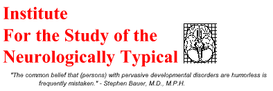

D
The autistics.org project
Autism Network International
Independent Living on the Autistic Spectrum mailing lists
Online Asperger Syndrome Information and Support
On-The-Same Page
Ooops Wrong Planet! Syndrome
Return to the index page
Copyright © 1998-1999 ISNT@autistics.org. Last updated August 13, 1999.